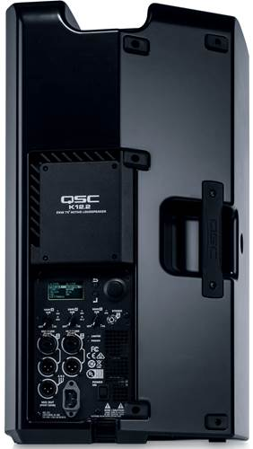

QSC K8, K10, K12.2, KS212C and KLA12 Repairs
Professional component-level repairs for QSC powered speakers, subwoofers and amplifier modules
At Britfix Repairs, we provide professional QSC powered speaker repair services for customers across the UK. We specialise in component-level diagnostics and repair of amplifier modules, power supplies, DSP boards and protection circuit faults.
We regularly repair QSC professional audio equipment including QSC K8, K10, K12.2, KS212C and KLA12. In many cases, the amplifier module or electronic board can be repaired without replacing the complete speaker or purchasing an expensive replacement module.
QSC Models We Repair
- QSC K8 and K8.2 powered speakers
- QSC K10 and K10.2 powered speakers
- QSC K12 and K12.2 powered speakers
- QSC KS212C cardioid subwoofers
- QSC KLA12 line array powered speakers
- QSC amplifier modules, DSP boards and power supply boards
Common QSC Faults We Repair
- ⛔ Speaker has no power or appears completely dead
- ⚠️ QSC speaker stuck in protect mode
- 🔇 No sound from the speaker
- 🔉 Very low, distorted or intermittent output
- 🔁 Speaker continuously restarts or reboots
- 🔥 Burning smell, blown components or short circuit
- 🔌 Power supply failure or damaged power section
- 🎚️ Amplifier module failure
- 💻 DSP board, firmware or startup fault
- 🌡️ Speaker shuts down after warming up
- 💡 Display or power indicator turns on but there is no audio
- ⚡ Fuse blows immediately after switching on
QSC K12.2 Protect Mode Repair
One of the most common faults affecting the QSC K12.2 is a protect mode or startup problem. The speaker may display a protect message, fail to produce sound, restart repeatedly or stop during operation.
These faults can be caused by problems in the amplifier section, power supply, DSP board, firmware, output stage or protection circuitry. We carry out detailed diagnostics to identify the actual cause before repair.
QSC KS212C and KLA12 Repair
We also repair electronic faults in the QSC KS212C cardioid subwoofer and QSC KLA12 line array speaker. Common problems include no power, protection mode, amplifier failure, power supply faults, distorted sound and intermittent operation.
Depending on the fault, you may be able to send only the amplifier panel or electronic module instead of shipping the complete speaker. Please contact us before posting the unit so we can confirm what needs to be sent.
How Our QSC Repair Service Works
- Contact us with the exact QSC model and a description of the fault.
- Send photos or a short video showing the problem where possible.
- We will confirm whether you should send the complete speaker, amplifier panel or electronic board.
- Package the item securely and include your name, phone number and return address inside the parcel.
- We will inspect the equipment, complete the repair and test it before return.
UK-Wide Mail-In QSC Repair Service
Our workshop is based in London, and we accept QSC repairs from customers throughout the United Kingdom.
You can send your QSC amplifier module, rear panel or complete unit using a tracked and insured courier service. After repair, the equipment will be tested and securely packaged for return delivery.
Why Choose Britfix Repairs?
- Professional component-level electronic repair
- Experience with QSC professional audio equipment
- Power supply, DSP and amplifier module diagnostics
- Repair may be more economical than replacing the complete module
- UK-wide tracked mail-in service
- Equipment fully tested before return